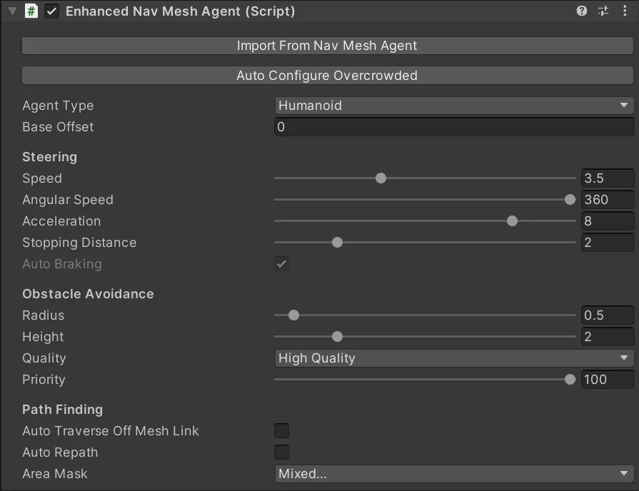

This MonoBehaviour is a direct replacement for the Unity NavMeshAgent MonoBehaviour. It implements the same properties and methods but internally is an Overcrowded agent. This provides an easy path to migrate from a traditional NavMeshAgent based system to the higher quality Overcrowded system.
Migration⚓︎
To migrate a GameObject from a NavMeshAgent:
- Add the
Enhanced Nav Mesh Agentscript to the GameObject. This will automatically create several other MonoBehaviours (Synchroniser,Entity Identity,Convert To Entity,Navigator,Steer For Goal). - Click
Import From Nav Mesh Agentto automatically copy all of the settings from theNav Mesh AgentMonoBehaviour and disable it. - Click
Auto Configure Overcrowdedto automatically configure some default settings on the Overcrowded MonoBehaviours.
Differences⚓︎
The Enhanced Nav Mesh Agent does not implement all of the properties of the Nav Mesh Agent:
- autoBraking - Not Implemented. Overcrowded always uses autoBraking style behaviour.
- nextPosition.set - Not Implemented. Open a feature request if you need this feature.
- velocity.set - Not Implemented. Open a feature request if you need this feature.
- currentOffMeshLinkData.activated - It is not possible for Overcrowded to get this information from the Unity low level pathfinding API.
- currentOffMeshLinkData.linkType - It is not possible for Overcrowded to get this information from the Unity low level pathfinding API.
- currentOffMeshLinkData.offMeshLink - It is not possible for Overcrowded to get this information from the Unity low level pathfinding API.
- nextOffMeshLinkData.activated - It is not possible for Overcrowded to get this information from the Unity low level pathfinding API.
- nextOffMeshLinkData.linkType - It is not possible for Overcrowded to get this information from the Unity low level pathfinding API.
- nextOffMeshLinkData.offMeshLink - It is not possible for Overcrowded to get this information from the Unity low level pathfinding API.
- navMeshOwner - It is not possible for Overcrowded to get this information from the Unity low level pathfinding API.
Inspector⚓︎

Import From Nav mesh Agent⚓︎
Automatically copies settings from a Unity NavMeshAgent MonoBehaviour to this EnhancedNavmeshAgent and disables the NavMeshAgent.
Auto Configure Overcrowded⚓︎
Automatically configures Overcrowded MonoBehaviours to act in a similar way to the Unity NavMeshAgent.
Agent Type⚓︎
Sets which nav meshes this agent can move on. Equivalent to Overcrowded Navigator.AgentType property.
Base Offset⚓︎
Set the vertical offset between the navmesh point and the GameObject transform. Equivalent to Overcrowded Synchroniser.BaseOffset
Speed⚓︎
Sets the maximum speed of this Agent. Equivalent to Overcrowded Navigator.MaximumSpeed property.
Angular Speed⚓︎
Sets the maximum turning speed of this Agent (degrees/second). Equivalent to Overcrowded Navigator.MaximumAngularSpeed property.
Acceleration⚓︎
Get/set the maximum acceleration of this Agent. Equivalent to Overcrowded Navigator.MaximumAcceleration property.
Stopping Distance⚓︎
Get/set how far before the end of a path the agent should begin slowing to a stop. Equivalent to Overcrowded SteerForGoal.SlowingDistance property.
Auto Braking⚓︎
Disabling this is not supported by Overcrowded. Always enabled.
Radius⚓︎
Get/set the radius of this agent when avoiding collisions with other agents. Equivalent to Overcrowded Navigator.Radius property.
Height⚓︎
Get/set the height of this agent when avoiding collisions with other agents. Equivalent to Overcrowded Navigator.Height property.
Quality⚓︎
Get/set the quality of local avoidance algorithm to use.
Currently Overcrowded does not support multiple quality levels. Setting this to None is equivalent to setting the Navigator.AvoidOtherAgents property to false. Setting this to any other value is equivalent to setting Navigator.AvoidOtherAgents to true
Priority⚓︎
Get/set the priority of this agent compared to other agents in local avoidance, a higher priority will cause other agents to yield if they are in the way of this agent. Equivalent to Overcrowded Navigator.Priority property.
Auto Traverse Off Mesh Link⚓︎
Get/set if this agent should automatically teleport across off-mesh links. Equivalent to Overcrowded SteerForGoal.AutocompleteOffMeshLinks property.
Auto Repath⚓︎
Get/set if this agent should automatically generate a new path to the goal when the path becomes stale (e.g. the goal moves). Equivalent to Overcrowded Navigator.EnableAutoRepathing property.
Area Mask⚓︎
Get/set the area mask to use for pathfinding queries. Equivalent to Overcrowded Navigator.EnableAutoRepathing property.
Scripting⚓︎
Most of the scripting methods in the EnhancedNavMeshAgent are the same as the basic NavMeshAgent. Refer to the Unity documentation. This section documents methods/properties which are different from the normal Unity version.
bool SetPath([NotNull] NavMeshPath pathIn)⚓︎
Performs the same function as NavMeshAgent.SetPath. However, this is marked as Obsolete in the EnhancedNavMeshAgent because it encourages extra allocations which are bad for performance. If possible, use the alternative bool SetPath(in PathfindingResult pathIn) method instead.
bool SetPath(in PathfindingResult pathIn)⚓︎
Performs the same function as the basic SetPath method. This version is more performant.
bool CalculatePath(...)⚓︎
Performs the same function as NavMeshAgent.CalculatePath. However, this is marked as Obsolete in the EnhancedNavMeshAgent because it encourages extra allocations which are bad for performance and also performs pathfinding on the main game thread which is very bad for performance. If possible use the alternative CalculatePathAsync method instead.
PathfindingTask CalculatePathAsync(Vector3 targetPosition, int nodePoolSize = 4096)⚓︎
Begins calculating a path from the current agent position to the targetPosition. Unlike the CalculatePath method this starts the pathfinding work on a background thread, this means it does not impact performance by stalling the main thread.
// Start pathfind
var task = agent.CalculatePathAsync(target);
// Every frame, check if it's complete yet
var result = task.TryGetResult();
if (result.HasValue)
{
// Use path here
...
// Dispose result when you are done
result.Dispose();
}